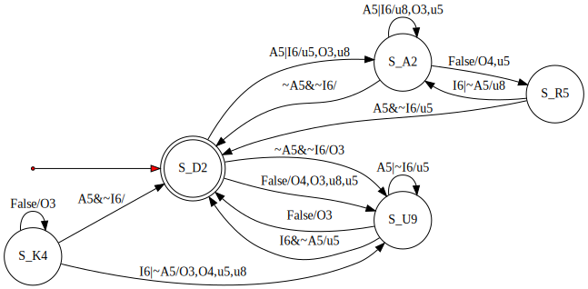
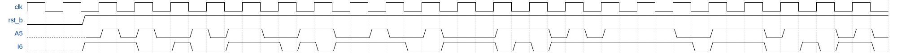

Practical activity test
Fall 2020
Working procedure
Create a pesonal directory, of the form "FirstName_LastName". For each problem, create a dedicated
subfolder in your personal folder where you will include all files of your implementation for the respective problem (Verilog
source files, script files, pictures of any of your handwritten papers).
After solving all proposed problems, archive your personal folder (zip, 7zip, rar) and attach it on the Virtual Campus.
Problem 1 (9 points)
Design, using Verilog, the Finite State Machine (FSM) depicted in the figure bellow (click the figure for opening
the full-sized image) using the One Hot encoding. The FSM has an asynchronous
reset input which is active-low. The FSM module will be named fsm
(and will be written in file fsm.v). If deemed necessary, additional modules can be constructed.

Build a testbench for verification of the FSM using the timing diagram bellow. Write down on paper the sequence of all states
traversed by the FSM when stimulated with the bellow inputs. Don't forget to add the picture of the paper to the problem folder
in your personal folder.
